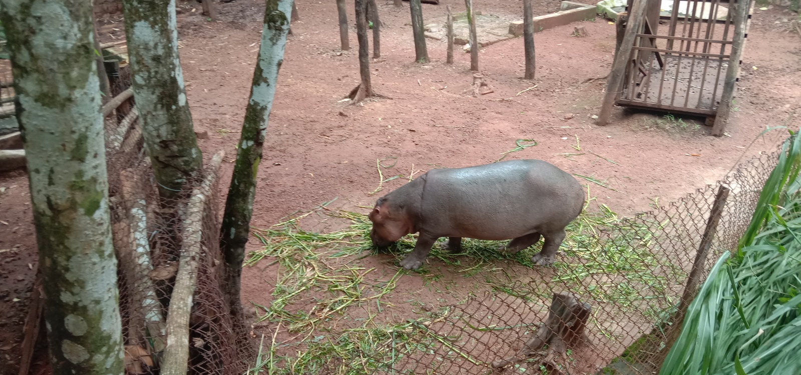
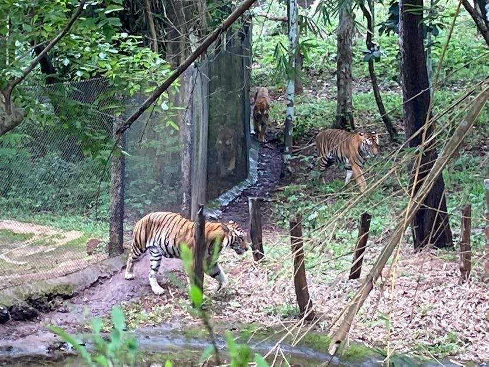

Some groups of mammals, called carnivores, feed exclusively on meat. They are fed with small dead animals like rats, rabbits etc. Carnivores are usually fed in the evening at about 6 pm. Herbivores are fed with vegetables, leaves etc. pertaining to their diet. The zoo has a breeding centre where animals like rats and mice are bred to feed the carnivores.


Natural foods that birds eat include insects, worms, berries, fruit, flower nectar, nuts, seeds, tree sap, buds of trees and shrubs, fish, small animals, other birds, and eggs. They even scavenge on dead animals. The zoo provides similar food to the birds in order to fulfil their dietary needs to remain healthy. Most birds are fed with insects and worms. Birds like parrots and pigeons eat seeds and fruits. Birds like crows and ducks eat both, plant produce and flesh of other animals. Birds like eagles and vultures eat rodents and snakes.
Most snakes are carnivores or insectivores. They need to eat meat and don't eat any fruits or vegetables for the most part. Snakes are fed with live rats or mice which, again, are bred in the breeding centre. Larger snakes are fed once a week, because of their slow metabolism unlike smaller snakes, which are fed regularly. Smaller lizards are usually insectivores and are fed with insects and worms. Larger lizards are carnivores are usually fed with mice and rats. Land turtles and tortoises usually don’t eat any meat or insects, so their diet includes different kinds of fruits and greens.